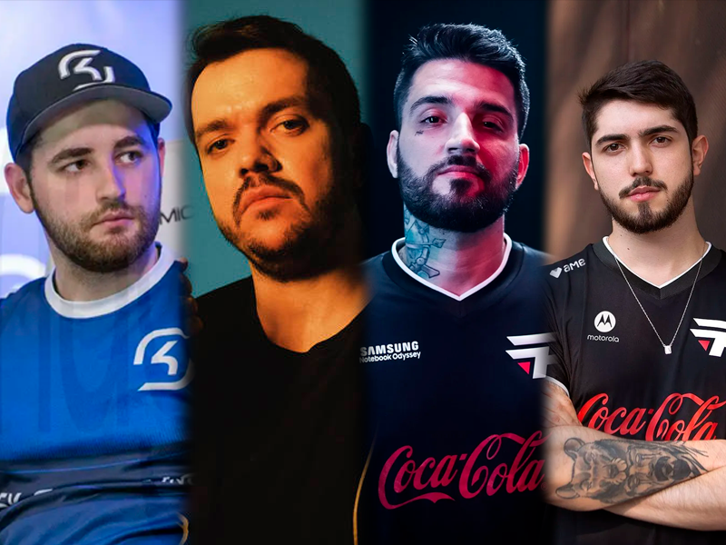

E-sports é o nome dado para a modalidade de esportes virtuais, esportes praticados de forma não convencional, usando aparelhos eletrônicos, é uma modalidade em crescimento nos dias de hoje por conta da capacidade tecnológica atual, hoje em dia conseguimos realizar campeonatos inteiros sem interrupções e transmiti-los gerando renda monetária tanto para os organizadores quanto para os jogadores.
Existem vários jogos famosos nos dias de hoje que tem seus campeonatos realizados por grandes empresas, alguns dos mais famosos são o:
Esses jogos foram os 5 mais assistidos de 2022 de acordo com o Esports Charts. O League Of Legends teve uma audiência de 5.1 milhões de pessoas liderando a lista, então sim, o mundo dos e-sports é um mundo atrativo para empresas e bem lucrativo considerando patrocínios.
A origem dos e-sports vem desde de o ano 1972, nos Estados Unidos, especificamente na universidade de Stanford, lá aconteceu a primeira competição de algum jogo eletrônico e o jogo a ser disputado era o SpaceWars.
O campeonato tinha até um nome, era conhecido como "Olimpíadas Intergaláticas de Spacewar", e o prêmio daquele campeonato foi um ano de assinatura da revista Rolling Stone.
Após aquele campeonato houveram outros muitos campeonatos feitos em jogos famosos da época, como Space Invaders.
Daquela ideia surgiria um novo mundo inteiro de oportunidades para as pessoas, aqueles que gostam de jogos e querem seguir carreira com os mesmos mas sem ser na parte de desenvolvimento, seguem sendo jogadores profissionais ou até mesmo streamers, uma profissão que também cresce nos dias de hoje por conta da tecnologia.
Os atletas de e-sports tem uma rotina restrita de treinamento, um treinamento pesado baseado em 8 a 12 horas de treinos diários que podem acontecer tanto de suas casas, pelo modelo de home office, quanto de um game office, ou uma game house.
O home office todos estamos familiarizados pela situação do mundo atual, mas um game office é diferente, é uma estação de trabalho, possivelmente uma grande casa, com vários desktops preparados para os atletas onde eles podem passar essas 8 a 12 horas confortaveis para treinar. Agora uma game house funciona quase igual ao game office, a diferença gritante é que os jogadores moram no seu local de trabalho, junto com alguns outros profissionais, como seu técnico e talvez até psicólogo.
Os atletas por passarem por diversos estresses durante suas rotinas de treinos necessitam da ajuda de profissionais também da área de saúde, tanto física quanto mental, para isso algumas organizações possuem quiroprata, psicólogo, médicos e até nutricionistas.
Desde seu surgimento para a atualidade aconteceu muita coisa ao mundo impactanto diretamente nos e-sports, e eles consequentemente mudaram, e com eles mudando, a vida das pessoas que jogam os jogos também mudaram.
Hoje em dia pessoas que não tinham uma visão de um provavél futuro agora ganham sua vida com os jogos, seja como profissional ou como streamer, ou como caster, dentro desse mundo dos e-sports existem diversas fontes de inspiração para as pessoas, jogadores que vieram do nada e se tornaram gigante, pessoas que a alguns anos atrás não tinham o que comer.
E aqui no Brasil nos temos diversos exemplos nos e-sports,diversas pessoas que tem seu nome ovacionado pelo público de seu jogo específico, dos dois maiores jogos (CS:GO e League of Legends) os maiores nomes são Gabriel "Fallen" Toledo, Alexandre "Gaules" Chiqueta, Felipe "brTT" Gonçalves e Flávio "Jukes" Fernandes
